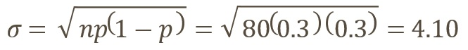
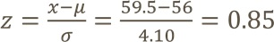

Prosedur untuk Pendekatan Normal ke Distribusi Binomial :
1. Periksa apakah perkiraan normal dapat digunakan.
2. Temukan mean dan deviasi standar
3. Tuliskan soal dengan menggunakan faktor koreksi kontinuitas, dan tunjukkan area yang sesuai di bawah kurva normal
4. Temukan skor z yang sesuai
5. Temukan solusinya
Hanya empat kasus yang mungkin muncul. Kasus-kasus tersebut adalah :
1. Untuk probabilitas setidaknya x terjadi, gunakan area di atas 𝑥 - 0,5
2. Untuk probabilitas lebih dari x terjadi, gunakan area di atas (𝑥 + 0,5)
3. Untuk probabilitas munculnya x atau lebih kecil, gunakan area di bawah (𝑥 + 0,5)
4. Untuk probabilitas yang lebih kecil dari x terjadi, gunakan area di bawah (𝑥 - 0,5)
Contoh :
Misalkan manajemen Restoran Santoni Pizza menemukan bahwa 70% pelanggan barunya kembali untuk makan lagi. Untuk seminggu di mana 80 pelanggan baru (pertama kali) makan di Santoni's, berapa kemungkinan 60 atau lebih akan kembali untuk makan lagi?
Solusi :
Rata-rata = 𝜇 = 𝑛𝑝 = 80(0,70) = 56
Simpangan baku :

Kemudian,
